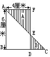

习题十四
1.右图是一个圆心角为45°的扇形，其中直角三角形BOC的直角边为6厘米，求阴影部分面积。
2.在右图中，阴影部分A的面积比阴影部分B的面积大10.5平方厘米，求线段BC的长度？

3.一个直径为10厘米的圆，如左图.圆内有一个扇形，扇形的弧长为3.14厘米，求扇形的面积。
4.右图中，大正方形面积比小正方形面积多24平方米，求小正方形的面积是多少？
5.用同样的长方形条砖，在一丛花的周围镶成一个正方形边框，如右图.边框的周长为264厘米.里边小正方形的面积为900平方厘米，问每块长方形条砖的长和宽各是多少厘米？